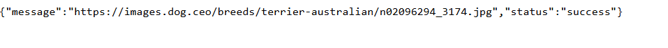
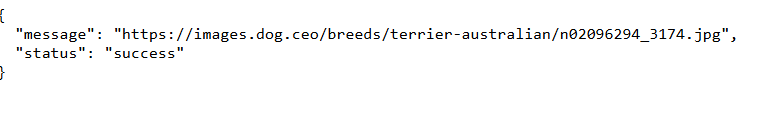
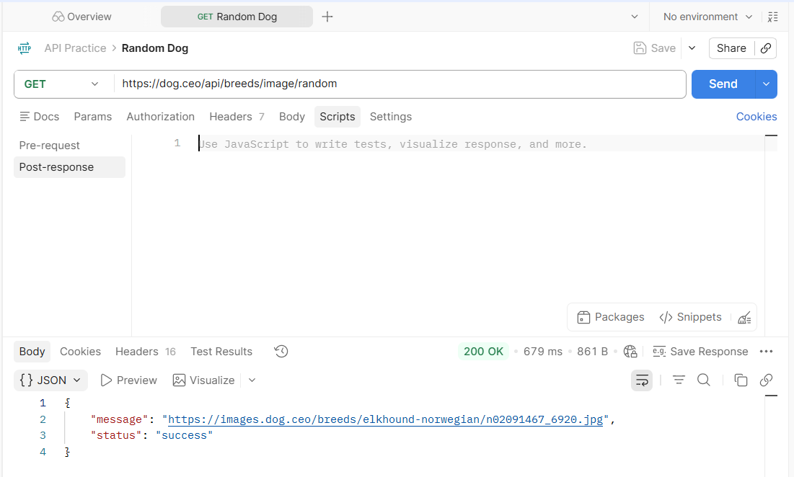
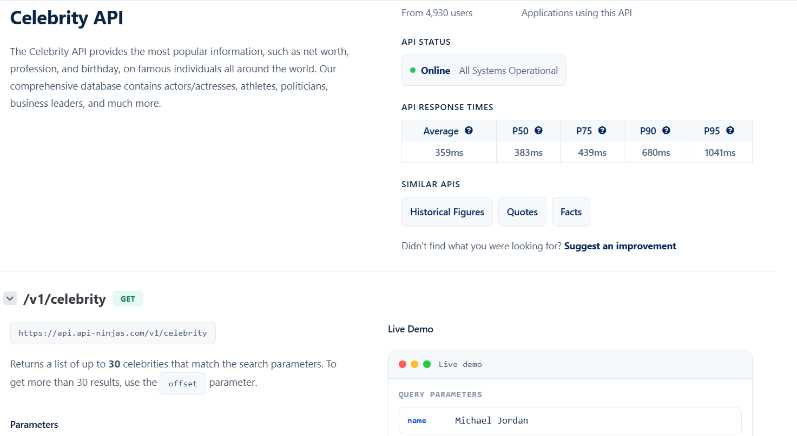
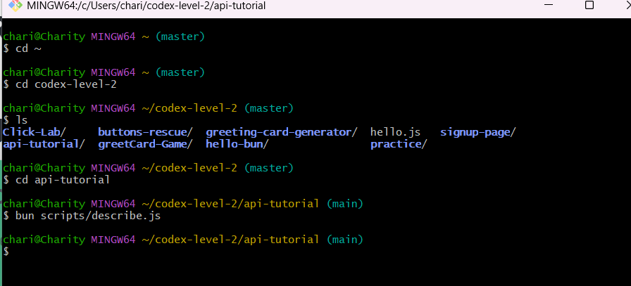
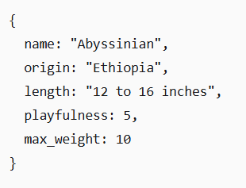

API- Exploration
Step 1 — The URL is the request


I observed the code in a straight path all jammed together. Not as legible.
When I hit pretty print the code formatted properly.
{ "message": "https://images.dog.ceo/breeds/hound-afghan/n02088094_2062.jpg", "status": "success" }It came back with the image of a hound dog.
He looked very friendly.
Field Notes: Exploring the API Browser
- Used an API address to retrieve images directly in the browser
- Observed that the API returned different responses each time I made a request
- Retrieved various images of cats and dogs
- Compared the regular response with the Pretty Print option.
- Noticed that pretty print made the response easier to read and understand
- Learned that APIs can return dynamic content and that the response can be viewed and inspected directly in a browser.
- This activity heled me become more comfortable recognizing what an API response looks like.
Postman and API Ninjas
Step 2-Exploration
Reveals What the browsers hiding?
Postman
I played around with the postman program.
It allows us to test sites and view the backend info I used the dog request page to inspect.
It's a really useful tool for site inspection..
The responses are detailed. You can inspect the network, code, and visuals in the program.
It is going to be a useful tool in my Web Development career.
Last updated 3 mins ago

API Ninjas
This program is very helpful in that it allows you to .
Last updated 3 mins ago

Field Notes: Exploring an API with API Ninjas and Postman
Objective
The goal of this exercise ,was to become more comfortable working with external API, understanding how an API key is used for authentication, and learning how Postman can simplify repeated API requests.
What I practiced
- Assessing API Documentation
- What information the API provides
- What endpoint provides the informaion I need
- What HTTP method is required
- What parameters the endpoint accepts
- How authentication works
- What the expected response looks like
- Working with an API key
- Using Postman
- Creating a Variable for API
I explored API Ninjas and looked through several of the available API sources/endpoints. This helped me seehow an API can provide access to information without requiring me to build or maintain the underlying data myself.
A useful first step when working with an unfamiliar API to identify
I sucessfully used an API key to make requests to API Ninjas.
The API key acts as a credential that allows the API provider to identify and authorize my requests. This was an important practical lesson because an API request is not always simply a matter of knowing URL. The request may also require authentication information.
Teaching Inference
Think of an API key to a building. The endpoint is the room I want to enter,while the API key demonstrates that I have permission to enter the building.
I used Postman to experiment with API requests.
Postman was helpful because it allowed me to construct and send requests without having to immediately write application code I could see the request and response directly, which made it easier to understand what was happening.
I was able to successfully retrieve information from seveeral API sources.
One of the most useful things I learned was how to store my API key as a Postman variable
Instead of manually entering the API key every time I made a request, I could reference the variable in my requests.
This changes the work flow
Manually enter API key-send request-repeat
to:
Store the key once-reference the variablreuse it across requests
This is a small change, but it makes API testing much more efficient
One Record in, One line out
Step 3-The Error
Debugging
Open Data in the Terminal
In this step, I attempted to open the terminal using JavaScript. I had some difficulty geting the program to work because I was unsure about the file paths and what the expected output should look like. After looking t my folder structure, I understood that describe.js is inside the scripts folder while data.json should be in the main project folder. I learned that the program needs to read the JSON file and print one of its records to the terminal.
Last updated 3 mins ago

Field Notes: Opening Data in the Terminal
Date August 29, 2026
Activity: reading data.json using JavaScript/Bun in the terminal
- I started looking at the project folder structure for my api-tutorial project.
- I confirmed that I had a sripts folder created/opened the describe.js file inside it.
- At first, I was unsure what code belonged in describe.js , so it was empty
- I tried running the program with node scripts/describe.js, but the terminal returned "node:command not found."
- But I realized I needed to use the bun program
- I am in the process of understanding how to get the terminal to print.
- The expected result is in the image above.
- I understand that the JSON files stores that data, while, the Java/script fike tells the comouter what to do with the data.
- I also learned that file names, folder locations, and the command used to run a program are important when working in the terminal.
Real Response
Since my terminal was not printing the correct results, I copied and pasted this image from Boris training.
Last updated 3 mins ago

Return Values
Step 4: Printing values VS Returning Values
Inspection
Card title
This is a wider card with supporting text below as a natural lead-in to additional content. This content is a little bit longer.
Last updated 3 mins ago
Card title
This card has supporting text below as a natural lead-in to additional content.
Last updated 3 mins ago
Process Arrays
Step 5: forEach and Map
Every Record at once
Card title
This is a wider card with supporting text below as a natural lead-in to additional content. This content is a little bit longer.
Last updated 3 mins ago
Card title
This card has supporting text below as a natural lead-in to additional content.
Last updated 3 mins ago